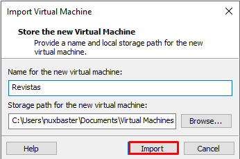

Introducción¶
El presente documento tiene como finalidad guiarle en el proceso de actualización de los siguientes sitios de la Coordinación de Educación en Salud basados en Drupal:
Se explica paso a paso el proceso de actualización dentro de un ambiente virtual previamente configurado mismo que se encuentra disponible para su descarga aquí, fuera de este ambiente requerira configurar un sistema operativo Centos 7 con todo lo necesario para poder actualizar los sitios, dicha explicación se encuentra fuera de los alcances de este manual.
Para mantener el hilo de lo ocurrido con este proceso llamense dudas, errores, etc; le sugiero colocarlas en issues, el cual es el canal de información oficial.
Requerimientos¶
Nombre |
Descripción |
|---|---|
Requerido para crear un servidor virtual de Centos. |
|
Contiene los recursos necesarios para poder llevar acabo la actualización. |
|
Proporcionados por Eduardo Barcenas y este se descarga de red interna. |
Instalación de VMWare Workstation¶
Para instalar VMWare Workstation realice los siguientes pasos:
Descargar la aplicación desde el sitio oficial proporcionado en la tabla de arriba
De click sobre el ejecutable para iniciar el proceso de instalación y en la pantalla presione Next
Acepte los términos de la licencia y de clic en Next
Habilite «Enhanced Keyboard Driver» y de clic en Next
En las siguientes pantallas presione Next
Presione Install para comenzar
Presione finalizar y de clic en Restart
Cargando imágen virtualizada¶
Despues de haber descargado la máquina virtual, proceda a descomprimir el archivo rar, dentro tendra la siguiente estructura de ficheros:
Revistas.mf
Revistas.ovf
Revistas-disk1.vmdk
Revistas-file1.iso
Proceda a ejecutar el archivo llamado Revistas.ovf, la pantalla inmediata debe ser la siguiente:
Coloque el nombre y la ruta de su máquina virtual y proceda a dar clic en Import.